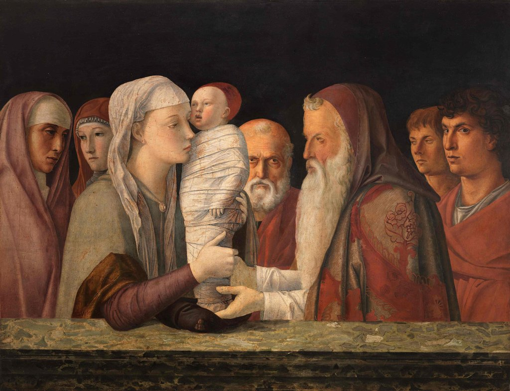

Un portrait de famille ?

Joseph, qui nous fait face derrière Marie et Syméon. Descendez maintenant vers l’Enfant. Jésus est un peu à gauche de l’axe, et c’est pourtant vers lui que se tendent les mains. Le récit nous ramène à Jésus, tandis que l’axe du tableau nous invite à remarquer Joseph. C’est dans ce visage que certains ont proposé de reconnaître Jacopo Bellini, le père du peintre.
Regardez les visages derrière Marie et Syméon. Et si certains appartenaient à la famille du peintre ? À gauche, on a proposé de reconnaître Nicolosia Bellini, la sœur de Giovanni et l’épouse de Mantegna, ainsi qu’Anna, leur mère. Au centre, Joseph pourrait avoir les traits de Jacopo Bellini, le père de Giovanni. Quant aux deux hommes à droite, il pourrait s’agir de Giovanni Bellini lui-même et de son beau-frère Andrea Mantegna. Une autre hypothèse reconnaît Gentile Bellini, le frère de Giovanni, à la place de Mantegna.
Passez maintenant au tableau de Mantegna. Là aussi, deux visages ont retenu l’attention : la femme à l’extrême gauche pourrait être Nicolosia, et l’homme à l’extrême droite, Mantegna lui-même. Ces identifications restent des hypothèses. Mais en passant d’un tableau à l’autre, on peut se demander si les deux beaux-frères ont donné à certains témoins de la scène les traits de leurs proches
En 1453, Andrea Mantegna épouse Nicolosia Bellini, fille du peintre Jacopo et sœur de Gentile et de Giovanni. Le mariage relie une famille d’artistes vénitiens à un jeune peintre qui s’est formé à Padoue, au contact de l’art antique.
En 1460, Mantegna s’établit à Mantoue, au service des Gonzague. Bellini poursuit sa carrière à Venise, où les commandes religieuses lui donnent l’occasion de peindre pour des lieux très différents. Leurs tableaux continuent de circuler entre ces milieux.